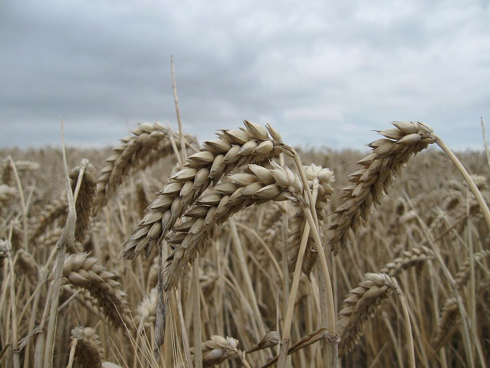

折り方 1
店のこと
お店について確認できているのは、所在地とInstagramのアカウントだけです。
「想像してみる」の部分は制作側の想像です。お店の実際の様子・考え・商品とは関係がありません。
確認できていること
- 店名は「BLUE SKY BAKERY」、業種はパン屋
- 所在地は兵庫県西宮市松籟荘5-26
- 電話番号はなし。連絡はInstagramから
- 営業時間・定休日・メニュー・価格・ご予約・駐車場は準備中

想像してみる
「青空」という名前から
由来は分かりません。制作側は、見上げると気持ちが軽くなるような名前だな、と感じました。パン屋さんの投稿を眺めながら、いつか行ってみたいと想像するための、きっかけのひとつです(実際のお店の姿ではありません)。

